| 文档版本： | V1.0 |
| 组 号： | 第 ______ 组 |
| 项目名称： | 统一应用软件权限管理系统（RBAC-Structured） |
| 编制单位： | 信息中心 / 系统架构组 |
| 编制日期： | 2026 年 11 月 18 日 |
| 适用阶段： | 概要设计（需求分析 → 概要设计 → 详细设计） |
| 密 级： | 内部 |
| 版本 | 日期 | 修订人 | 修订说明 |
|---|---|---|---|
| V0.1 | 2026-11-10 | 架构组 | 依据《需求规格说明书》V1.1 建立概要设计框架，确定分层架构与模块边界。 |
| V0.9 | 2026-11-15 | 架构组 | 补充包图、设计类图、状态图、系统级 DFD 与运行时时序图；完成轻量级 ATAM 评估。 |
| V1.0 | 2026-11-18 | 架构组 | 与当前代码（RBAC3 实现）对齐模块命名与接口清单；补充需求可追溯性矩阵、图表编号与边界声明。 |
本文档是统一应用软件权限管理系统（以下简称“本系统”或“权限平台”）在需求分析阶段之后的概要设计交付物，用于回答“系统怎么做”的总体问题：确定体系结构风格、划分模块与层次、定义模块间与系统间的接口契约、给出全局数据与存储策略、描述关键运行时协作，并对架构方案做一次轻量级 ATAM 评估。
预期读者包括：课程指导教师与评阅人员、系统架构师与开发人员、测试与运维人员，以及后续承接本系统的技术人员。本文档也是详细设计、编码、测试与部署的直接上游依据。
首个接入案例为某市政公司（约 10000 名员工，1 个总公司 + 9 个分公司、111 个部门、18 套在跑业务系统、约 359 个功能点）。现状是“一人一系统一套权限”，权限口径不一致、离职账号清理不及时、前端隐藏代替后端校验、权限变更生效慢、敏感信息保护不足、日志留存不合规。本系统的建设目标是建立公司级 IAM 平台，实现统一身份、统一认证、统一授权、双维度权限（功能 + 数据）、权限即时生效、永久审计与敏感信息保护。
范围内：统一账号与四级组织树；RBAC0/1/3 能力（角色继承、角色互斥、数据范围）；前端权限树与后端 API 分离建模；服务端 API 鉴权；授权全生命周期；审计日志；敏感字段加密与脱敏；多系统接入登记。范围外：不重写任何业务系统、不新建业务功能点、不做物理删除、不承担人事主数据维护、不提供统一门户聚合、不做 ABAC 与审批流（扩展项）。详见《需求规格说明书》1.3 节。
本文使用的术语与缩略语见表 1-1。
表 1-1 术语与缩略语
| 术语 | 说明 |
|---|---|
| RBAC | 基于角色的访问控制。本系统以 RBAC0（用户—角色—权限）为基础，实现 RBAC1（角色继承）与 RBAC3（继承 + 互斥），并叠加数据权限维度。 |
| PDP | 策略决策点（Policy Decision Point），本系统中指 DecisionService：只读、无状态地计算用户在某系统可执行的权限集合。 |
| 功能权限 | 对菜单、按钮、API 可执行操作的控制；操作取值覆盖 NONE / VIEW / ALL / VIEW_EDIT 等 12 种。 |
| 数据权限 / 数据范围 | 对全公司、本分公司、本部门、本项目、本人五类数据范围的授权与判定。 |
| 前端权限树 | iam_permission 中的菜单/按钮自关联树，回答“页面是否显示、按钮是否可用”。 |
| 后端 API | iam_api 中的 HTTP 接口目录，按 api_path + http_method 匹配，回答“这次请求是否允许执行”。 |
| fail-closed | 默认拒绝：未登记 API、未映射权限、无有效角色、权限未授予，任一环节缺失均拒绝。 |
| 版本快照缓存 | 以“不可变快照 + 全局版本号”组织的 Redis 缓存；变更时只递增版本号，旧快照自然过期，不使用 KEYS 扫描。 |
| ATAM | 体系结构权衡分析方法（Architecture Tradeoff Analysis Method）；本文只模拟其“场景—效用树—分析—改进”的核心逻辑。 |
| DFD | 数据流图（Data Flow Diagram），本文使用 0 层（顶层）与第一层。 |
src/main/java/com/iam/platform、src/main/resources/db、deploy/swarm、README.md、DEPLOYMENT_4NODES.md。编号约定：功能需求 FR-NN、非功能需求 NFR-NN、用例规约 IAM-XXX-NNN、验收用例 UC-NN 均沿用 SRS；架构决策 AD-N、架构故事 S1～S7、风险 R-N、非风险 NR-N、敏感点 SP-N、权衡点 TP-N、改进 IMP-N 为本文新增编号。
图表约定：图按“章-序号”编号（如图 4-1），表按“章-序号”编号（如表 2-1）；正文引用图号/表号。所有建模图均由脚本化 SVG 生成，源文件位于 design/概要设计图/，可重复生成。
模板说明：本文采用课程 2026 版《概要设计说明书》模板（章节与作业“四、内容要求”1～9 一一对应；该模板以 GB/T 8567 概要设计说明书结构为基础裁剪）。未删除模板章节：标准 HDL 的“引用文件”并入 1.4，“总体设计”对应第 2、3 章，“接口设计”对应第 5 章，“运行设计”对应 2.2、4.4 与第 7 章，“出错处理设计”对应 2.3.3 与第 8 章，“安全保密设计”对应 2.1.3 与第 8 章，“维护设计”对应第 8 章。确实不适用的“硬件接口”保留标题并注明原因（5.1.2）。
建模工具说明：图 2-1～图 7-1 均为标准 SVG 矢量图，源文件位于 design/概要设计图/，由脚本化绘图生成，可导入 draw.io、Visio 或 StarUML 继续编辑；不是手绘图或照片。
本文的设计与评估遵循表 1-2 所列原则；后续章节的模块划分、接口契约、数据策略与部署方案均以此为准。
表 1-2 设计原则与约束
| 原则 / 约束 | 落地方式 | 体现位置 |
|---|---|---|
| 可追溯性 | 每个模块、接口、数据策略与架构决策标注 FR / NFR 编号，并在第 9 章矩阵中闭环 | 表 2-1、表 3-1、表 9-1、表 9-2 |
| 高内聚、低耦合 | 按业务能力划分 M01～M12；模块间只传标识与值对象；interfaces → application → infrastructure 单向依赖 | 3.1、3.2、3.3 |
| 最小权限、默认拒绝 | 未登记 API、未映射权限、无有效角色、权限未授予，任一环节缺失即拒绝 | AD-3、M07、8 |
| 前后端权限同源 | 角色 → 前端权限 → API 为唯一授权事实；前端查询与后端鉴权共用 M07 | AD-4、图 4-1、图 4-6 |
| 非功能需求前置 | 性能用版本快照与无状态 PDP；安全用 AES-GCM、令牌哈希、脱敏；可靠性用事务、锁、唯一约束；可维护性用分层与模块边界；可移植性用容器与环境变量 | 2.1.3、6.3、7.2、8 |
| 数据与审计约束 | 账号不物理删除（封存）；日志只追加、不可改删；权限变更保存前后快照 | 4.2、AD-8、6.3 |
| 阶段与范围约束 | 按课程三阶段实现 RBAC0 → RBAC1 → RBAC3；不重写业务系统、不做审批流（列为扩展） | 1.2、3.2、8 |
| 技术与部署约束 | JDK 17、Spring Boot 3.4、MySQL 8、Redis 7、Vue 3；Docker Swarm + SWR + Secrets | 2.1.3、7.1、7.2 |
本系统采用“分层 + 模块化单体（modular monolith）”为主、“可分离的认证组件与无状态 PDP”为辅的混合架构风格：运行时以单个 Spring Boot 应用部署，内部严格按 interfaces → application → infrastructure 分层并划分 M01～M12 模块；认证（M01）与决策（M07）在逻辑上独立、在数据上只读无状态，具备未来拆分为独立服务的边界条件。
选择依据：
系统总体结构如图 2-1 所示。
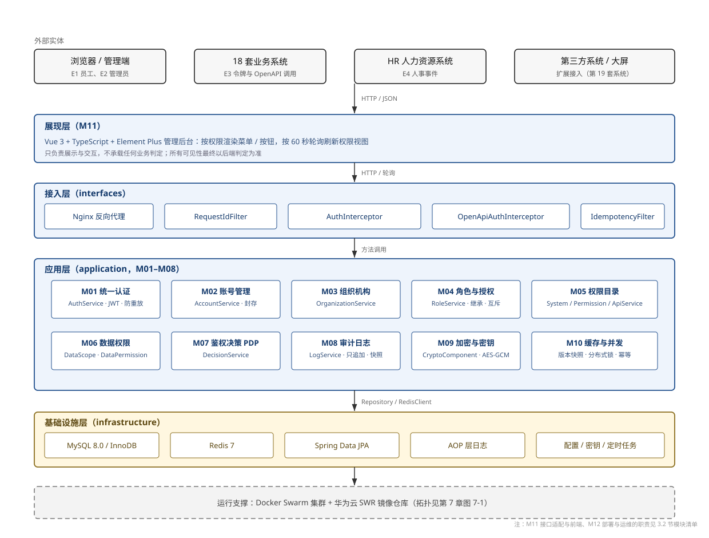
系统自上而下分为四层，并由此形成两条运行时路径：
/open/permissions 返回的权限集合渲染菜单与按钮；不承载判定，所有可见性最终以后端为准（FR-36、FR-38）。RequestIdFilter 注入追踪号；AuthInterceptor 完成令牌认证与管理端 API 鉴权；OpenApiAuthInterceptor 处理接入方签名与防重放；IdempotencyFilter 处理写请求幂等。两条关键路径：管理路径（浏览器 → 接入层 → M02/M03/M04/M05/M06 → MySQL → M08 审计）；鉴权路径（业务系统/前端 → 接入层 → M01 认证 → M07 决策 → Redis 快照 / MySQL 回源 → M06 数据范围 → M08 审计）。
关键架构决策及其质量属性目标、需求映射见表 2-1。
表 2-1 关键架构决策
| 编号 | 决策 | 理由 | 目标质量属性 | 对应需求 |
|---|---|---|---|---|
| AD-1 | 采用分层模块化单体，暂不拆分微服务 | 授权写操作需要本地事务与快照一致；团队与部署规模不支持微服务治理成本；模块边界保留拆分条件 | 可维护性、一致性、可移植性 | FR-38、FR-41、FR-42 |
| AD-2 | 认证（M01）与决策（M07）职责分离，决策无状态 | “你是谁”与“你能做什么”变化频率不同；决策是高频只读路径，可独立缓存与水平扩展 | 性能、可修改性 | FR-31～FR-34、FR-38、NFR-07 |
| AD-3 | 鉴权 fail-closed：未登记 API、未映射权限、无角色、未授权一律拒绝 | 前端隐藏不可信；默认拒绝是最小权限原则的直接落地 | 安全 | FR-37、NFR-02、NFR-03 |
| AD-4 | 前端权限树与后端 API 分离，角色只绑定前端权限，API 通过 permission_id 归属 | 一个按钮可调用多个 API；合并会导致“隐藏按钮”被误当成服务端鉴权 | 安全、可修改性 | FR-17～FR-19、FR-36～FR-38 |
| AD-5 | 权限缓存采用“不可变快照 + 全局版本号 + TTL”，变更时递增版本号 | 避免 KEYS 扫描阻塞 Redis；版本切换使旧快照立即不可达，满足即时生效 | 性能、可修改性 | FR-40、NFR-08 |
| AD-6 | 授权写操作使用 Redis 分布式锁（owner token + Lua 原子解锁）+ 数据库唯一约束 / 乐观锁 | 并发授予、互斥校验、临时授权需要跨请求互斥；数据库约束是最后兜底 | 可靠性、一致性 | FR-41、FR-14、FR-25 |
| AD-7 | 敏感字段 AES-256-GCM 加密存储，HMAC 检索哈希，展示层脱敏视图 | 既支持按姓名/电话检索，又保证库内无明文；视图隔离避免实体直出 | 安全 | FR-48、FR-49、NFR-01 |
| AD-8 | 普通操作与权限变更统一写入 iam_log，只追加，数据库触发器拒绝更新删除 | 统一查询入口，权限变更保存前后快照，满足永久审计 | 可审计性 | FR-42、FR-44～FR-47、NFR-09 |
| AD-9 | RBAC3 判定链：账号正常 → 有效用户-角色 → 角色继承 → 角色-权限覆盖 → 系统/状态过滤 | 判定规则集中在一个 PDP，继承与互斥的变化只影响 M07/M04 | 可修改性、安全 | FR-13、FR-14、FR-24、FR-29 |
| AD-10 | Docker Swarm + 华为云 SWR + Docker Secrets 部署；app 无状态多副本 | 课程环境 4 台节点；镜像集中构建、节点只拉取；密钥不落镜像 | 可移植性、可用性 | NFR-11、NFR-13 |
说明：表中“目标质量属性”与 2.3 节效用树、2.2 节故事一一对应；需求编号引用 SRS。
以下 5 个故事对应 2.3 节效用树的高优先级叶节点，每个故事包含 ATAM 六要素并标注需求编号。
工作日 9:00–10:00，18 套业务系统同时迎来访问高峰，业务系统后端对每个受保护请求调用本系统鉴权接口；普通员工与管理后台也在并发查询菜单权限。刺激源是外部业务系统与终端用户，刺激是“每请求一次鉴权/权限查询”，运行环境为 10000 账号、359 个功能点、Redis 与 MySQL 正常。制品是接入层拦截器、M07 决策服务与 Redis 版本快照缓存。系统应命中当前版本的用户权限快照并完成功能权限与数据范围判定，返回放行或 403。响应度量为：单次鉴权平均 ≤ 100ms、峰值 ≤ 200ms（NFR-07），错误率 < 0.1%，且同一用户的权限快照在一次请求内只计算一次（批量判定复用）。对应需求 NFR-06、NFR-07、NFR-08、FR-33、FR-39。
一名普通员工通过浏览器开发者工具或脚本，直接构造 HTTP 请求访问只有管理员可见的接口；或以伪造成员身份尝试读取他人姓名与电话。刺激源是内部越权用户或外部攻击者，刺激是“未授权 API 调用 / 伪造令牌 / 敏感字段读取”，环境为系统正常运行的任意时刻。制品是认证拦截器、M07 决策、M09 加密组件与 M02 视图转换。系统应：校验令牌签名与吊销状态；按 api_path + http_method 找到已登记 API 与其前端权限；若未登记、未映射、用户无有效角色或角色未授予该权限，一律返回 401/403 并记录审计；敏感字段在库内为密文、在普通视图中为脱敏值。响应度量为：未授权请求 100% 拒绝（UC-03），敏感字段 0 明文落库，审计记录包含用户、动作、结果与请求号。对应需求 FR-37、FR-48、FR-49、NFR-01、NFR-02、NFR-03、NFR-04。
业务高峰期 Redis 节点发生故障或网络分区，权限快照读取、分布式锁、幂等键与防重放 nonce 全部不可用。刺激源是基础设施故障，刺激是“缓存/锁依赖不可达”，环境为生产负载。制品是 M07 决策、M10 缓存组件、M04 授权写操作。系统应采取有界超时与快速失败：读路径在超时后回源 MySQL 完成判定（或返回 503 并由业务系统降级），写路径（授权、回收、互斥校验）直接失败并返回明确错误，任何情况下不得因依赖故障而放行未授权请求。响应度量为：故障期间未授权请求 0 放行；单次失败在 2 秒内返回；Redis 恢复后 60 秒内缓存自愈且无需重启应用。对应需求 NFR-11、NFR-04、FR-41。
管理员发现某员工调岗，撤销其原角色并授予新角色；此时该员工仍处于登录状态，且前端页面未刷新。刺激源是管理员，刺激是“角色授权/回收”，环境为在线用户与 3 个应用副本。制品是 M04 角色服务、M10 版本缓存、M11 前端轮询。系统应在一个本地事务内写入授权事实与变更前后快照，递增全局权限版本号，使该用户旧快照立即不可达；用户下一次 API 请求即按新权限判定，前端在下一次轮询（≤60 秒）后刷新菜单。响应度量为：后端生效 ≤ 1 次请求，前端可见 ≤ 60 秒；变更期间并发授予同一角色时由分布式锁串行化，不产生重复或丢失授权。对应需求 FR-27、FR-28、FR-40、FR-41、FR-42、NFR-08。
审计人员接到合规检查，需要查询某员工过去 30 天的全部权限变更（谁、何时、改了什么、成功与否），并导出 CSV。刺激源是审计人员，刺激是“按时间/用户/类型/结果查询并导出”，环境为系统运行一年、日志千万级。制品是 M08 审计日志、统一日志表与导出接口。系统应按索引列分页查询，权限变更记录包含变更前后 JSON 快照；日志只追加，任何更新/删除被数据库触发器拒绝；导出操作本身也写入日志，并对 CSV 做公式注入防护。响应度量为：查询 P95 ≤ 3 秒；导出 10 万行内 ≤ 60 秒；日志不可篡改可验证。对应需求 FR-44～FR-47、NFR-09、NFR-10。
评估对象与方法：评估对象是 2.1 节已提出的架构方案；顺序为“设计 → 讲故事 → 建效用树 → 分析 → 给改进建议”。本文不模拟完整评审会议流程与多轮利益相关者协商。
质量属性效用树如图 2-2 所示，叶节点的场景、需求与优先级见表 2-2。
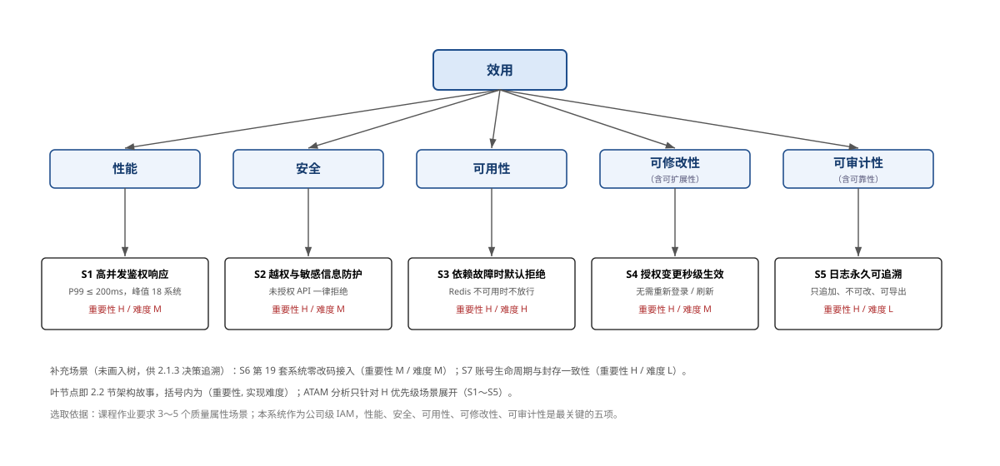
表 2-2 质量属性效用树叶节点
| 叶节点 | 场景 | 质量属性 | 对应需求 | 重要性 | 实现难度 |
|---|---|---|---|---|---|
| S1-1 | 高峰期单次鉴权 P99 ≤ 200ms | 性能 | NFR-06、NFR-07 | H | M |
| S2-1 | 未授权 API 100% 拒绝，敏感字段不落明文 | 安全 | FR-37、FR-48、NFR-01～03 | H | M |
| S3-1 | Redis 故障时不放行未授权请求，2s 内失败返回 | 可用性/可靠性 | NFR-11、NFR-04 | H | H |
| S4-1 | 授权回收后后端 ≤ 1 请求、前端 ≤ 60s 生效 | 可修改性 | FR-28、FR-40、FR-41 | H | M |
| S5-1 | 日志可查询、可导出、不可改删 | 可审计性 | FR-44～FR-47、NFR-09 | H | L |
| S6 | 第 19 套系统零改码接入 | 可修改性/可扩展性 | FR-35、NFR-13 | M | M |
| S7 | 账号全生命周期与封存一致性 | 可靠性/安全 | FR-02、FR-05 | H | L |
注：S6、S7 为补充场景，未画入图 2-2，不参与本次 ATAM 分析，仅用于 2.1.3 的架构决策追溯。
各高优先级场景采用的架构方法及分析结论见表 2-3。
表 2-3 高优先级场景的架构方法分析
| 场景 | 采用的架构方法 | 作用机理 | 分析结论 |
|---|---|---|---|
| S1 | 无状态 PDP + 版本快照缓存 + 单条 join 查询 + 覆盖索引 + 批量判定复用 | 命中快照时一次 Redis 读取；未命中时一次联表查询取候选权限，避免 N+1；批量接口只计算一次集合 | 满足 P99 ≤ 200ms 的把握较高；热点用户快照集中，需关注缓存雪崩（见 R-3） |
| S2 | 拦截器统一认证鉴权 + API/权限分离 + fail-closed + AES-GCM + 脱敏视图 | 每个请求先认证后鉴权；未登记 API 默认拒绝；实体不直出，视图层解密/掩码 | 能有效抵御水平/垂直越权与敏感信息泄露；依赖“管理端接口全部登记”的配置纪律 |
| S3 | Redis 超时与有界重试 + 回源判定 + 写操作快速失败 + 锁 owner token | 读路径可退化到数据库；写路径拒绝而非放行；Lua 原子解锁避免误删 | 安全属性保持；可用性在 Redis 故障时下降，属于有意权衡（TP-4） |
| S4 | 版本号递增 + TTL 淘汰 + 前端 60s 轮询 + 分布式锁 + 变更快照 | 旧快照不可达；事务内写事实与快照；锁串行化并发授权 | 后端即时生效；前端受轮询周期限制，严格“秒级”需推送（IMP-3） |
| S5 | 统一日志表 + AOP 切面 + 触发器只追加 + 索引 + CSV 导出 | 写入口唯一；查询走组合索引；导出流式生成并审计 | 满足永久保存与可追溯；日志与业务同库带来容量风险（R-5） |
风险点按“决策 + 论证 + 质量影响”列于表 2-4；非风险点、敏感点与权衡点随后分列。
表 2-4 风险点（决策 + 论证 + 质量影响）
| 编号 | 决策 | 论证 | 质量影响 |
|---|---|---|---|
| R-1 | MySQL 单副本 + 本地盘部署（AD-10） | 数据库节点宕机或磁盘故障时，账号、授权、令牌与日志全部不可读；单副本无自动故障转移 | 削弱可用性（NFR-11），鉴权与登录同时中断，业务系统无法降级到本地判定 |
| R-2 | Redis 同时承担权限快照、分布式锁、幂等键与防重放（AD-5、AD-6） | Redis 故障时读路径可回源，但写授权、幂等判断与防重放全部失败；故障恢复前管理动作不可用 | 削弱可用性；若实现为“异常即放行”则直接削弱安全性，必须保持 fail-closed |
| R-3 | 全局版本号使全部用户快照同时失效（AD-5） | 授权变更频繁时，每次递增版本号都会造成缓存整体击穿，未命中请求集中回源 MySQL | 削弱性能（NFR-07），高峰期可能出现查询排队与延迟抖动 |
| R-4 | 角色继承链在未命中时逐层查询父角色（AD-9） | 继承层级加深时每次判定需要多轮角色查询与去重，继承链越深查询放大越明显 | 削弱性能；建议限制继承深度或一次性加载子树 |
| R-5 | 审计日志与业务同库同实例，且鉴权请求同步记录（AD-8） | 日志表持续增长，索引与备份窗口扩大；同步写日志会增加鉴权路径延迟 | 削弱性能与可维护性；极端情况下磁盘写满影响业务库 |
| R-6 | 管理后台与鉴权服务同进程（AD-1） | 批量查询、日志导出等管理操作与鉴权共享 JVM、连接池与线程池 | 削弱性能与可用性；缺少进程级隔离，一个慢查询可能拖慢鉴权 |
| R-7 | 前端依赖 60 秒轮询刷新权限（AD-5、M11） | 权限回收后，前端最多 60 秒仍显示旧菜单；虽然后端已即时拒绝，用户会看到“可点但失败” | 削弱可修改性与用户体验；严格意义的“即时”未完全满足（FR-40） |
KEYS 扫描，避免 Redis 单线程被阻塞，对性能与稳定性均为正向。结论：现有架构对 S1、S2、S4、S5 的主要目标有较高支撑度；S3 的安全属性可保证，但可用性依赖 Redis 与 MySQL 的可靠性。上线前最需要处理的是 R-1（数据库单点）、R-2（Redis 单点与 fail-closed 实现一致性）与 R-3（缓存击穿）。
系统包图如图 3-1 所示。
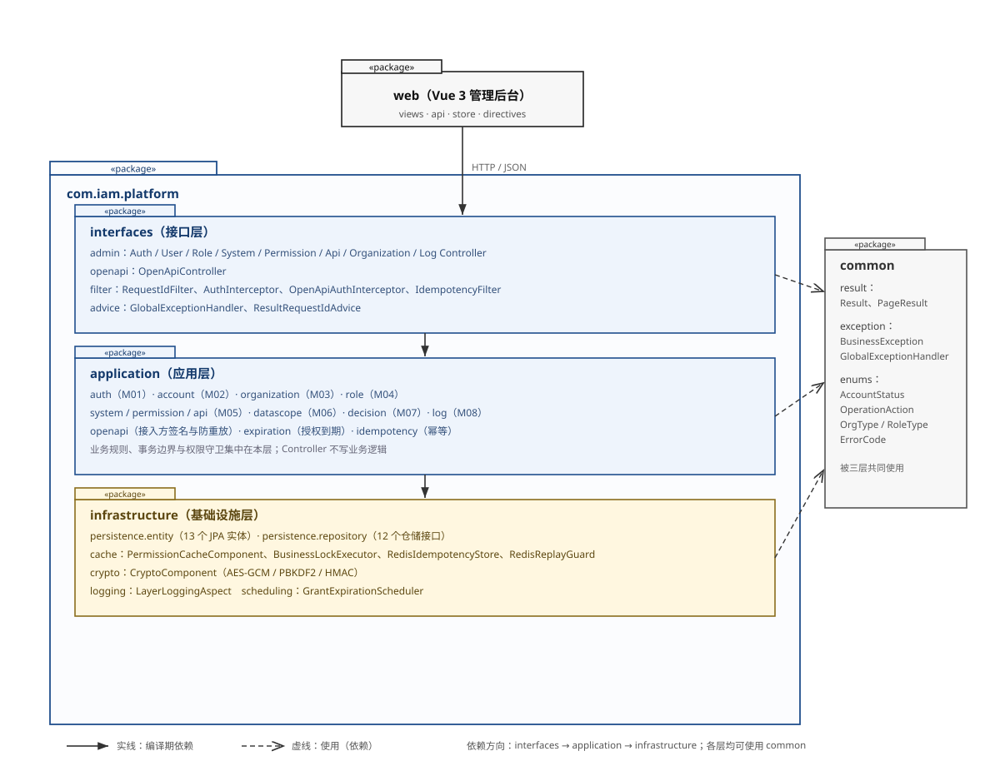
后端按 com.iam.platform 根包划分为四个子包，前端 web 作为独立构建产物：
Result/PageResult、错误码、业务异常、枚举。被三层共同使用，但不反向依赖任何层。依赖约束：interfaces → application → infrastructure 单向依赖；application 不得直接依赖 Spring MVC 类型；infrastructure 不得反向调用应用服务；跨模块调用只通过应用服务公开方法或仓储接口，不共享可变状态。
各模块的职责、输入输出与需求映射见表 3-1。
表 3-1 模块职责、输入输出与需求映射
| 编号 | 模块 | 职责 | 主要输入 | 主要输出 | 对应需求 |
|---|---|---|---|---|---|
| M01 | 统一认证 | 账号密码登录、令牌签发/校验/吊销、OpenAPI 接入方签名与防重放、请求认证 | 账号密码、令牌、签名头、客户端 IP | 访问令牌、用户标识、401/403 | FR-31～34、NFR-04 |
| M02 | 账号管理 | 账号建立与查询、状态变更与离职封存、员工调岗、敏感视图转换 | 账号资料、目标状态、调岗指令 | 账号视图、封存结果、令牌吊销指令 | FR-01～07、FR-48～49 |
| M03 | 组织机构 | 四级组织树查询、新增、修改、停用、移动、祖先路径维护 | 组织节点、父节点、层级与类型 | 组织树、节点详情、层级校验结果 | FR-08～11 |
| M04 | 角色与授权 | 角色定义、继承与互斥、用户-角色授予/回收、角色-权限授予/回收、临时授权到期 | 角色资料、用户/权限集合、有效期 | 角色、绑定记录、互斥冲突、到期回收结果 | FR-12～16、20、27～29、41 |
| M05 | 权限目录 | 业务系统登记、前端权限树维护、后端 API 登记与权限映射 | 系统/菜单/按钮/API 定义 | 权限树、API 目录、映射关系 | FR-17～19、35、NFR-13 |
| M06 | 数据权限 | 数据范围字典、角色-数据范围授权、有效范围合并、资源级联合判定 | 角色、范围类型、目标组织/项目/用户 | 有效范围集合、允许/拒绝判定 | FR-22～26、FR-24 |
| M07 | 鉴权决策（PDP） | 计算用户在某系统的权限集合、单点/批量判定、对外鉴权入口 | 用户标识、系统编码、权限/API 标识 | 权限 ID 集合、布尔判定、决策结果 | FR-33、37～39、FR-24 |
| M08 | 审计日志 | 普通操作与权限变更统一记录、分页查询、CSV 导出、AOP 层日志 | 操作人、动作、对象、结果、前后快照 | 日志记录、查询分页、导出文件 | FR-42、44～47、NFR-09 |
| M09 | 安全与加解密 | 敏感字段 AES-GCM 加解密、密码哈希、检索哈希、脱敏 | 明文/密文、密码、检索键 | 密文、哈希、脱敏值、校验结果 | FR-48～49、NFR-01 |
| M10 | 缓存与并发控制 | 权限版本与快照、分布式锁、幂等键、防重放 nonce | 用户/系统/版本键、锁键、幂等键 | 快照、版本号、锁持有结果 | FR-40～41、NFR-08 |
| M11 | 接口适配与前端 | HTTP 适配、请求追踪、幂等过滤、异常翻译；Vue 管理后台与权限渲染 | HTTP 请求、前端路由与权限集合 | 统一响应、菜单/按钮视图 | FR-36、39、NFR-12 |
| M12 | 部署与运维 | 镜像构建、Swarm 编排、Secrets 注入、健康检查与滚动更新 | 应用镜像、配置与密钥 | 可用服务、健康状态 | NFR-11、NFR-13 |
说明：模块内聚以“同一业务数据 + 同一变化原因”为准；例如角色定义、继承、互斥、角色-权限与用户-角色都围绕“角色能力”，统一归入 M04，避免引入额外的 GrantService 造成职责分散。
模块间调用的接口契约见表 3-2。
表 3-2 模块间接口契约
| 编号 | 接口名称 | 功能描述 | 核心输入大类 | 核心输出大类 | 协议类型 |
|---|---|---|---|---|---|
| I-01 | 认证服务·登录认证 | 校验账号密码与账号状态，签发访问令牌 | 账号、密码、客户端标识 | 令牌、用户标识、账号状态、有效期 | 进程内调用 / HTTPS |
| I-02 | 认证服务·令牌认证 | 校验签名、有效期与吊销状态，解析用户身份 | 访问令牌 | 用户标识或认证异常 | 进程内调用 |
| I-03 | 决策服务·权限集合查询 | 计算用户在某系统下已授权的前端权限集合 | 用户标识、系统编码 | 权限标识集合 | 进程内 / HTTPS |
| I-04 | 决策服务·功能权限判定 | 单点或批量判断用户是否拥有指定权限 | 用户标识、系统编码、权限标识集合 | 布尔结果 / 判定结果集 | 进程内 / HTTPS |
| I-05 | 数据权限·资源联合判定 | 在功能权限通过后，判断目标数据是否在授权范围 | 用户、系统、API、目标组织/项目/用户 | 允许/拒绝、命中的范围 | 进程内 / HTTPS |
| I-06 | 授权管理·授予与回收 | 用户-角色、角色-权限、角色-数据范围的写入与撤销 | 角色、用户或权限集合、有效期、原因 | 绑定结果、冲突/重复错误 | 进程内调用 / HTTPS |
| I-07 | 审计·记录与查询 | 记录操作与变更快照；按条件分页查询与导出 | 操作人、动作、对象、结果、快照、查询条件 | 日志记录 / 分页结果 / CSV | 进程内调用 / HTTPS |
| I-08 | 缓存·版本与快照 | 读取当前权限版本、读取/写入用户权限快照、递增版本 | 用户、系统、版本号、快照内容 | 版本号、快照或未命中 | 进程内调用 / Redis |
| I-09 | 并发控制·互斥执行 | 按业务键获取分布式锁并原子释放 | 锁键、持有者标识、超时 | 获取成功/失败 | 进程内调用 / Redis |
调用关系：Controller 只调用本模块的应用服务；应用服务之间以 I-03～I-06 协作（如 M04 写入后调用 M10 递增版本、调用 M08 记录快照）；M07 只读调用仓储与 M06，不调用任何写服务；M01 在封存场景接受 M02 的令牌吊销指令。所有跨模块调用只传标识与值对象，不传持久化实体。
核心设计类图如图 4-1 所示。
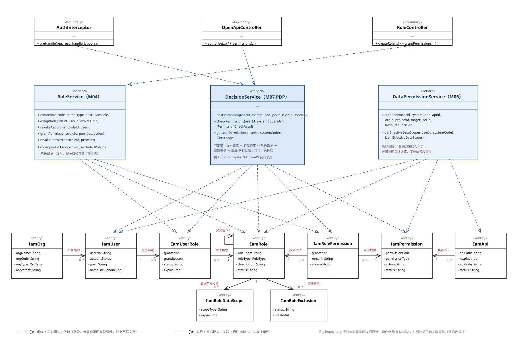
转换说明：需求阶段的概念类（用户、角色、权限、API、组织、系统）在设计阶段转换为三层角色：
AuthInterceptor、OpenApiController、RoleController。只负责接收请求、调用控制类、包装统一响应；不承担权限规则。DecisionService（几何与视觉中心，只读判定）、RoleService（授权写路径与事务）、DataPermissionService（功能 ∩ 数据联合）。三者职责互补：判定只读、授权写入、数据范围计算。关系与多重性：组织 1—0..* 用户；用户 1—0..* 用户角色绑定；用户角色绑定 0..*—1 角色；角色 1—0..* 角色权限；角色权限 0..*—1 前端权限；前端权限 1—0..* 后端 API；角色 1—0..* 数据范围授权；角色 1—0..* 互斥声明。角色通过父子自关联形成 0..1 父角色的继承关系（图中以 IamRole 左侧的自关联表达）；本系统不存在整体—部分聚合语义，故不画聚合菱形。
设计取舍：（1）实体框只列与权限判定相关的业务属性，不列外键与全部审计字段——外键、索引在 6.2 的表设计中表达；（2）不画 Repository 与 Entity 的长关联线，仓储的查询职责由方法签名表达（见详细设计）；（3）依赖线只表达“服务使用实体/服务”的事实，线上不写文字，依赖方向由服务在中心、实体在外围的位置表达。
账号状态图如图 4-2 所示，状态迁移、事件与守卫条件见表 4-1。
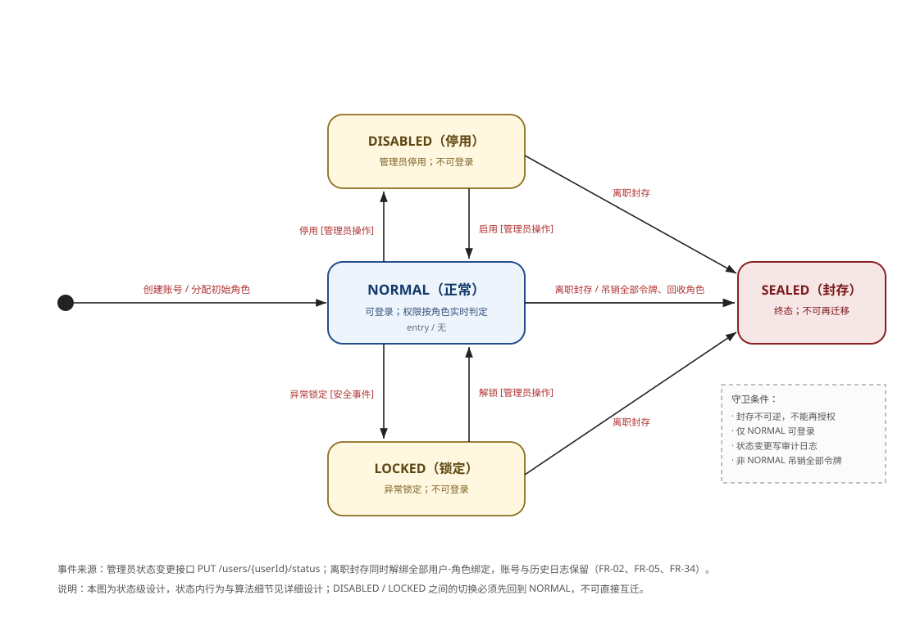
表 4-1 账号状态迁移、事件与守卫条件
| 当前状态 | 事件 | 守卫条件 | 目标状态 | 动作 / 说明 |
|---|---|---|---|---|
| （初始） | 创建账号 | 账号唯一、组织有效、必填字段完整 | NORMAL | 写入加密后的姓名/电话，记录创建日志 |
| NORMAL | 管理员停用 | 操作人为管理员；目标状态合法 | DISABLED | 吊销该用户全部令牌；写审计日志 |
| DISABLED | 管理员启用 | 账号未被封存 | NORMAL | 恢复登录能力；写审计日志 |
| NORMAL | 安全事件 / 异常登录 | 达到锁定策略 | LOCKED | 吊销令牌；记录失败与锁定原因 |
| LOCKED | 管理员解锁 | 风险已排除 | NORMAL | 恢复登录；写审计日志 |
| NORMAL / DISABLED / LOCKED | 离职封存 | 离职事实确认；账号未封存 | SEALED | 吊销全部令牌；回收全部用户-角色绑定；记录离职时间；账号与历史日志保留 |
| SEALED | 任意状态变更 | —（不可逆） | SEALED | 拒绝变更，返回 409 / 业务错误；封存账号不可再授权、不可登录 |
状态设计将“账号是否可用”与“权限如何计算”解耦：状态只影响能否登录与令牌是否有效，具体权限仍由 M07 按角色实时计算。封存是终态，符合 FR-05“不做物理删除、保留历史日志”的要求；LOCKED 与 DISABLED 不能直接互迁，必须先回到 NORMAL，避免状态语义混淆。
系统级数据流图如图 4-3 与图 4-4 所示。
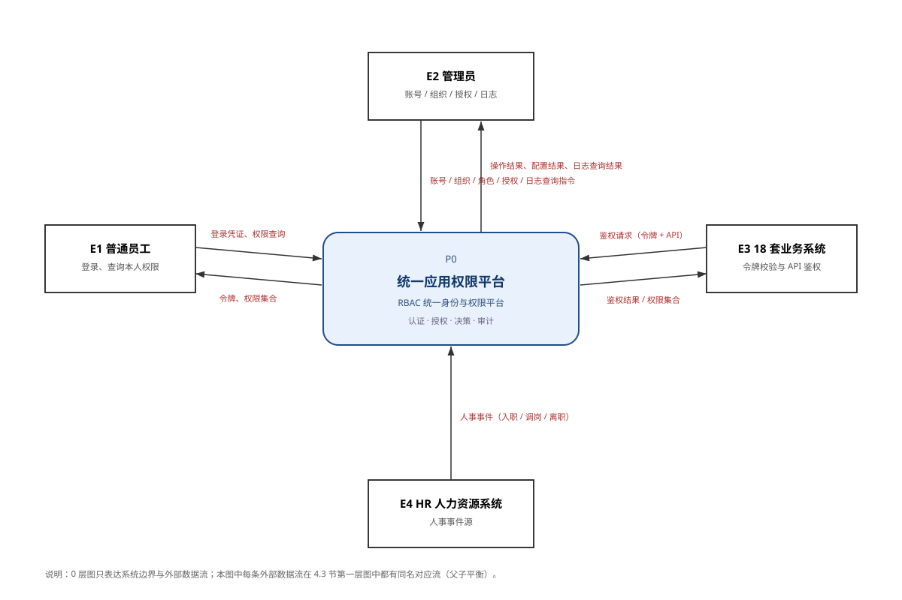
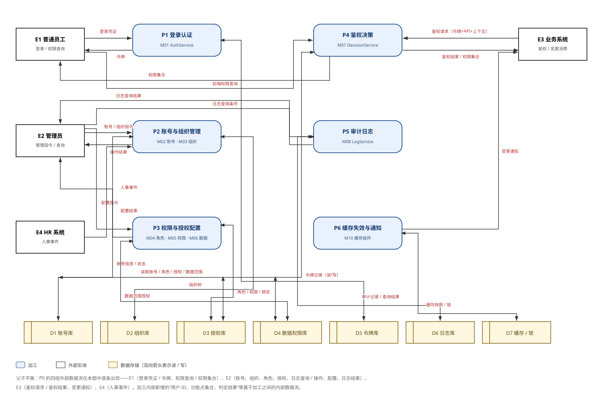
加工与模块映射见表 4-2。
表 4-2 第一层 DFD 加工与模块映射
| 加工 | 名称 | 对应模块 | 主要数据流 |
|---|---|---|---|
| P1 | 登录认证 | M01 | E1 登录凭证 → P1；P1 ↔ D1（账号/状态）、D5（令牌）；P1 → E1 令牌；P1 → P5 登录日志 |
| P2 | 账号与组织管理 | M02、M03 | E2 账号/组织指令、E4 人事事件 → P2；P2 ↔ D1、D2；P2 → E2 操作结果；P2 → P6 变更事件、P5 日志 |
| P3 | 权限与授权配置 | M04、M05、M06 | E2 配置指令 → P3；P3 ↔ D3（角色/权限/绑定）、D4（数据范围）；P3 → E2 配置结果；P3 → P6 变更事件、P5 日志 |
| P4 | 鉴权决策 | M07（依赖 M10） | E3 鉴权请求、E1 前端权限查询 → P4；P4 读 D1/D3/D4/D5、读写 D7；P4 → E3 鉴权结果、E1 权限集合；P4 → P5 鉴权日志 |
| P5 | 审计日志 | M08 | P5 ↔ D6；E2 查询条件 → P5 → E2 查询结果；各加工 → P5 日志记录 |
| P6 | 缓存失效与通知 | M10 | P2/P3 变更事件 → P6；P6 ↔ D7；P6 → E3 变更通知 |
父子平衡核对：顶层与第一层的外部数据流逐条一致，没有新增或丢失，如表 4-3 所示。
表 4-3 0 层与第一层外部数据流平衡核对
| 外部实体 | 0 层图中的数据流 | 第一层图中的对应数据流 |
|---|---|---|
| E1 普通员工 | 登录凭证、权限查询请求 → 系统；系统 → 令牌、菜单/按钮权限集合 | E1 → P1 登录凭证；E1 → P4 前端权限查询；P1 → E1 令牌；P4 → E1 权限集合 |
| E2 管理员 | 账号/组织/角色/授权/日志查询指令 → 系统；系统 → 操作、配置、日志结果 | E2 → P2 账号/组织指令；E2 → P3 配置指令；E2 → P5 日志查询；P2/P3/P5 → E2 对应结果 |
| E3 业务系统 | 鉴权请求 → 系统；系统 → 鉴权结果/权限集合、变更通知 | E3 → P4 鉴权请求；P4 → E3 鉴权结果；P6 → E3 变更通知 |
| E4 HR 系统 | 人事事件 → 系统 | E4 → P2 人事事件（入职/调岗/离职） |
DFD 规则符合性：每个加工都有输入和输出；外部实体不直接连接数据存储；D1～D7 均由加工读写（双向箭头表示读/写）；数据流只描述数据、不描述控制（锁、事务顺序留在 4.4 节与第 8 章）；父子图输入输出一致。加工之间新增的“用户标识、权限集合、判定结果”属于内部数据流，不参与父子平衡。
三张系统级时序图（图 4-5～图 4-7）均从 2.2 节的高优先级故事中选取，以模块/组件为生命线，不画到类方法级调用，不展开循环与条件内部算法。
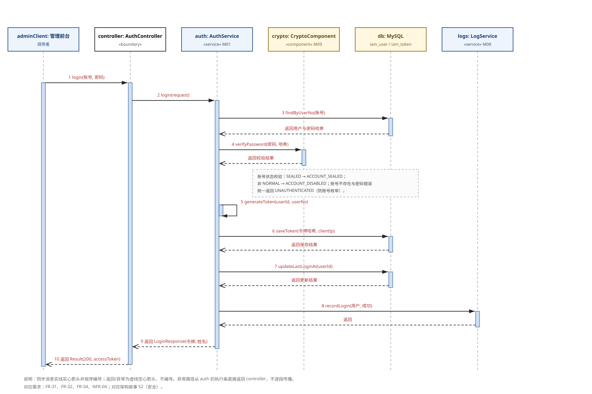
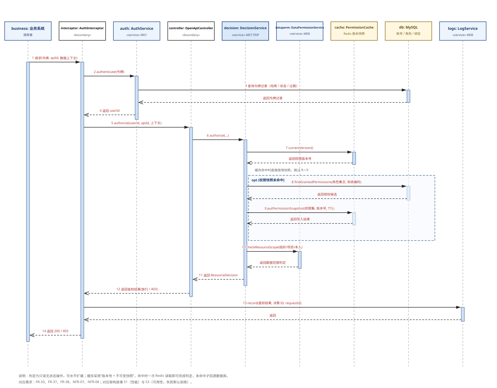
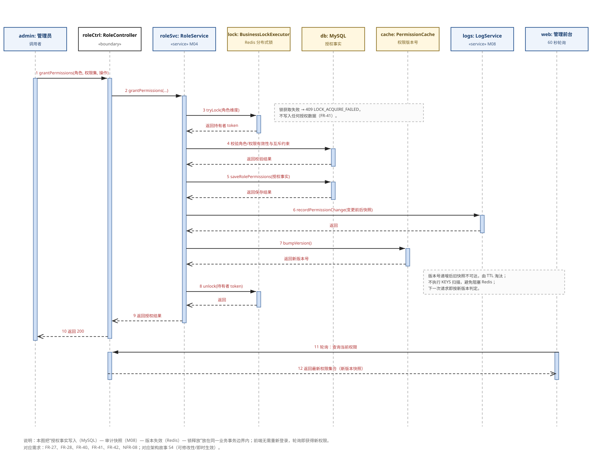
与 ATAM 评估的闭环：三张时序图与故事、效用树叶节点及 ATAM 发现的对应关系见表 4-4。
表 4-4 时序图与架构故事、效用树、ATAM 的闭环
| 时序图 | 对应故事 | 效用树叶节点 | ATAM 发现 | 设计响应 |
|---|---|---|---|---|
| 图 4-5 | S2 安全 | S2-1 | 令牌伪造、账号枚举、状态异常账号登录 | 统一错误码、密码哈希校验、状态校验、令牌只存哈希 |
| 图 4-6 | S1 性能 / S3 可用性 | S1-1、S3-1 | R-3 缓存击穿；R-4 继承链查询放大；fail-closed 一致性 | 版本快照 + 单条 join + 超时回源；判定只读无状态 |
| 图 4-7 | S4 可修改性 | S4-1 | R-2 Redis 依赖；R-7 前端轮询延迟 | 分布式锁 + 事务内写快照 + 版本号递增；前端轮询刷新 |
本系统面向管理员的交互形态为 Web 单页应用：Vue 3 + TypeScript 构建，运行于现代浏览器，通过 HTTPS 访问。界面按角色权限渲染菜单、按钮与页面元素；无权限元素不展示或置灰。文件导出（如日志 CSV）通过浏览器下载完成。
本系统不提供独立移动端 App 与大屏展示端；移动巡检等场景由接入的第三方业务系统自行实现界面，本系统只提供鉴权能力（范围外，见 SRS 1.3.2）。
本节不适用。原因：本系统不直接连接读卡器、生物识别仪、门禁等硬件设备；终端识别与硬件采集由接入业务系统或统一身份认证系统完成。系统仅通过 HTTP/JSON 与软件系统交互。
外部软件接口见表 5-1。
表 5-1 外部软件接口
| 编号 | 外部系统 | 交互内容 | 协议 / 形式 | 安全机制 |
|---|---|---|---|---|
| EXT-1 | 18 套接入业务系统 | 令牌校验、功能权限判定、前端权限集合查询、数据范围联合判定 | HTTPS + JSON（REST/OpenAPI） | Bearer 令牌；接入方 HMAC 签名 + 时间戳 + nonce 防重放 |
| EXT-2 | HR 人力资源系统 | 入职、调岗、离职事件（当前为扩展项，人工触发兜底） | HTTPS 回调 / 事件通知 | 应用签名、幂等键、事件去重 |
| EXT-3 | 华为云 SWR | 镜像拉取与凭据分发 | HTTPS（Docker Registry API） | 临时登录凭据 / --with-registry-auth |
| EXT-4 | 浏览器 | 静态资源、REST 请求、CSV 下载 | HTTPS / HTTP | TLS、CORS 白名单、Content-Type 校验 |
说明：本系统不实现统一身份认证系统的 /auth/* 边界（扩展阶段对接），也不重写业务系统的业务接口；接口语义以《API 设计说明书》为准。
内部接口分两类：前后端 REST 接口（浏览器 → 接入层）与模块间进程内契约（第 3.3 节 I-01～I-09）。表 5-2 给出 REST 资源组级别的契约，不展开具体参数。
表 5-2 内部 REST 接口组
| 编号 | 接口组 | 代表路由 | 核心输入大类 | 核心输出大类 | 协议 |
|---|---|---|---|---|---|
| API-01 | 认证 | /auth/login、/auth/logout、/auth/validate、/auth/password | 账号密码、令牌、新旧密码 | 令牌、有效性、操作结果 | HTTP/JSON |
| API-02 | 账号 | /users、/users/{id}、/users/{id}/status、/users/{id}/organization、/users/{id}/sensitive | 账号资料、目标状态、组织与岗位 | 账号视图、脱敏/明文视图（受独立权限） | HTTP/JSON |
| API-03 | 组织 | /organizations、/organizations/{id}/children、/organizations/{id}/parent | 组织节点、父节点、层级类型 | 组织树、节点详情 | HTTP/JSON |
| API-04 | 角色与授权 | /roles、/roles/{id}/assignments、/roles/{id}/permissions、/roles/{id}/exclusions | 角色资料、用户/权限集合、有效期 | 角色、绑定、冲突错误 | HTTP/JSON |
| API-05 | 权限目录 | /systems、/permissions、/apis、/permissions/{id}/apis/{apiId} | 系统、菜单/按钮、API 定义 | 权限树、API 目录、映射结果 | HTTP/JSON |
| API-06 | 数据范围 | /systems/data-scopes、/roles/{id}/data-scopes | 范围字典、角色、范围类型 | 范围列表、绑定结果 | HTTP/JSON |
| API-07 | 开放鉴权 | /open/authorize、/open/authorize/batch、/open/permissions、/open/data-scopes、/open/authorize/resource | 用户、系统、API、目标数据上下文 | 布尔判定、权限集合、数据范围 | HTTP/JSON |
| API-08 | 审计日志 | /logs、/logs/export | 时间、用户、类型、结果、分页条件 | 日志分页、CSV 文件 | HTTP/JSON、text/csv |
接口治理约定：除登录外全部请求需要 Authorization: Bearer；写请求支持 Idempotency-Key；响应统一包含业务码、消息、数据与请求号；错误码分为参数（1000 段）、认证鉴权（2000 段）、业务（3000 段）与系统（5000 段）。模块间契约只传标识与值对象，跨层不泄漏 JPA 实体。
全局数据逻辑结构如图 6-1 所示。
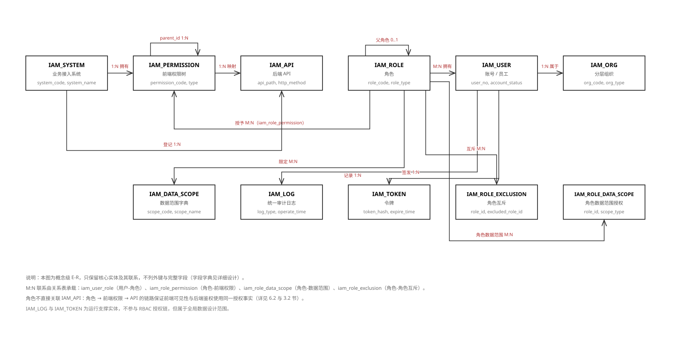
全局数据围绕六类核心业务实体组织：接入系统拥有前端权限树与后端 API 目录；前端权限通过父子自关联形成菜单/按钮树，并通过映射关系控制多个 API；角色与前端权限、用户、数据范围、其他角色（互斥）分别形成多对多或一对多联系；用户归属一个组织，并通过用户-角色绑定获得角色；组织以父子自关联形成总公司—分公司—部门—项目经理部四级树。审计日志与令牌是运行支撑实体，不参与授权链，但同属全局数据范围。
关键设计：角色不直接关联 API，而是“角色 → 前端权限 → API”。这样前端菜单/按钮可见性与后端接口鉴权使用同一份授权事实，避免两套口径（FR-38）。多对多关系由关系表承载，不把关系表画成独立业务实体；parent_id 自关联同时用于权限树、组织树与角色继承，属于同一建模手法。
全局主要数据表的主外键与职责见表 6-1（完整字段见详细设计）。
表 6-1 全局主要数据表（概要）
| 表名 | 主要字段（概要） | 主键 / 外键 | 说明 |
|---|---|---|---|
| iam_system | system_code、system_name、status、is_deleted、审计时间 | PK id；UK system_code | 接入系统登记 |
| iam_permission | system_id、parent_id、permission_code、permission_type、route_path、action、sort_no、status | PK id；FK system_id、parent_id（自关联） | 菜单/按钮自关联树 |
| iam_api | system_id、permission_id、api_code、api_path、http_method、status | PK id；FK system_id、permission_id | 后端 API 目录，运行期按路径+方法匹配 |
| iam_role | role_code、role_name、role_type、parent_id、status、version、description | PK id；UK role_code；FK parent_id | 功能角色与岗位型数据角色，支持继承 |
| iam_user | user_no、password_hash、name_enc、phone_enc、name_hash、phone_hash、org_id、post、account_status、leave_time | PK id；UK user_no；FK org_id | 账号与员工身份；敏感字段密文 + 检索哈希 |
| iam_org | parent_id、ancestors、org_code、org_name、org_type、org_level、leader_user_id、sort_no、status | PK id；FK parent_id；UK org_code | 四级组织树；ancestors 支持子树查询 |
| iam_user_role | user_id、role_id、status、effective_time、expire_time、grant_by、grant_reason | PK id；FK user_id、role_id；UK(user_id, role_id) | 用户-角色 M:N；支持有效期与回收 |
| iam_role_permission | role_id、permission_id、allowed_action | PK id；FK role_id、permission_id；UK(role_id, permission_id) | 角色-前端权限 M:N；allowed_action 决定可执行操作 |
| iam_role_exclusion | role_id、excluded_role_id、status | PK id；FK role_id、excluded_role_id | 角色互斥声明 |
| iam_data_scope | scope_code、scope_name、description、sort_no、status | PK id；UK scope_code | 全公司/本分公司/本部门/本项目/本人字典 |
| iam_role_data_scope | role_id、scope_type、org_id、project_id、status、expire_time | PK id；FK role_id、org_id | 角色-数据范围授权，支持临时授权 |
| iam_token | token_hash、user_id、system_code、issued_at、expire_at、revoked、client_ip | PK id；FK user_id | 令牌只存哈希；支持吊销与过期 |
| iam_log | log_type、user_id、username、action、operate_time、success、target、ip、system_code、detail、before_snapshot、after_snapshot、decision_id、request_id | PK log_id；索引字段见说明 | 统一审计日志，只追加；权限变更保存前后快照 |
字段字典、类型长度、索引与约束以《数据库设计说明书》和 schema.sql 为唯一口径；本表只表达全局实体与主外键关系，不列完整字段清单。
存储技术选型见表 6-2。
表 6-2 存储技术选型
| 数据类型 | 存储技术 | 选型理由 |
|---|---|---|
| 账号、组织、角色、权限、API、授权关系、日志、令牌 | MySQL 8.0 / InnoDB / utf8mb4 | 强事务与唯一约束是授权一致性的基础；关系模型天然表达多对多与自关联；团队与课程环境成熟、可运维 |
| 权限快照、版本号、分布式锁、幂等键、防重放 nonce | Redis 7（AOF 持久化） | 读多写少、TTL 语义天然匹配快照过期；原子递增与 Lua 脚本支持版本与原子解锁；单线程模型适合小键值高频访问 |
| 日志归档、导出文件 | MySQL 分区/归档表 + CSV 导出（规划） | 当前规模不需要对象存储；导出文件按需生成，不长期驻留；后续可平滑迁移到对象存储 |
bigint 主键；对外仅暴露数值 ID，不暴露业务编码作为主键，避免编码变更影响引用。is_deleted 标记；日志表不提供删除能力。KEYS 扫描，旧键由 TTL 自然淘汰。版本号变化后，下一次请求必然使用新快照。version 作为最终兜底。Idempotency-Key + 请求指纹记录在 Redis；接入方请求使用时间戳与 nonce，超出时间窗或 nonce 重复即拒绝。CREATE TABLE 等语句。部署拓扑如图 7-1 所示。
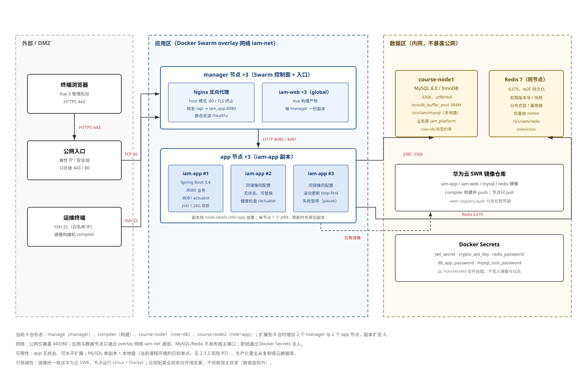
节点、角色、网络与端口的对应关系见表 7-1。
表 7-1 部署节点、网络与端口
| 节点 / 组件 | Swarm 角色 | 部署内容 | 网络与端口 | 说明 |
|---|---|---|---|---|
| manage | manager | Swarm 控制面；Nginx + iam-web（前端就绪后） | 公网 443/80；管理 22 | 部署入口与仲裁节点 |
| compiler | worker | 构建机：Maven 打包、Docker build、推送 SWR | 出网访问 SWR | 集群节点只拉镜像，不构建 |
| course-node1 | worker（role=db） | MySQL 8.0 + Redis 7，数据卷 /srv/iam | overlay 3306 / 6379，不发布宿主端口 | 数据库固定放置，本地盘 |
| course-node2 | worker（role=app） | iam-app ×1（目标形态 ×3） | overlay 8080 业务 / 8081 健康检查 | 2G 节点只放 1 个 JVM |
| manager ×3 | manager | Nginx host 模式、iam-web global | 公网 443/80 | 扩到 8 台时凑 3 个 manager 仲裁 |
| app ×3 | worker（role=app） | iam-app | overlay 8080 / 8081 | 无状态；滚动更新 stop-first |
| SWR | — | iam-app / iam-web / mysql / redis 镜像 | HTTPS | 集中镜像仓库 |
节点规格：当前课程环境按 manager 2 vCPU / 2 GB、app 2 vCPU / 2 GB（每节点 1 个 JVM，容器内存上限 1.28 GB、堆约 1 GB）、db 2 vCPU / 4 GB 规划；MySQL 缓冲池与 Redis 内存上限按节点内存设置，生产环境按压测结果调整。
网络隔离：公网只暴露 443/80 到 manager 上的 Nginx；应用节点与数据节点不发布宿主端口，仅通过 overlay 网络 iam-net 通信；SSH 仅对白名单 IP 开放。数据库与 Redis 不进入 DMZ。
协议：浏览器 → Nginx 为 HTTPS；Nginx → app 为 HTTP（overlay 内网）；app → MySQL 为 JDBC；app → Redis 为 RESP；节点 → SWR 为 HTTPS；应用健康检查通过 /actuator/health。
可用性：app 无状态、多副本、失败重启；manager 目标 3 节点保证仲裁；MySQL 当前单副本 + 本地盘是已知单点（R-1），生产化需主从复制或云数据库。所有密钥通过 Docker Secrets 以文件挂载，不写入镜像与日志。
本章逐条说明 NFR 在架构、模块、存储与部署中的落实位置，与第 2 章 ATAM 评估相互呼应。逐条落实方案见表 8-1。
表 8-1 非功能需求落实方案
| 编号 | 非功能需求 | 落实方案 | 落实位置 | 状态 |
|---|---|---|---|---|
| NFR-01 | 敏感信息加密存储、展示脱敏、密钥独立 | AES-256-GCM 加密姓名/电话；HMAC 检索哈希；视图层脱敏；密钥经 Secrets/环境变量注入 | M09、M02、7.2 | 已实现（独立密钥托管为扩展） |
| NFR-02 | 最小权限、默认无权限 | 新用户无角色即无权限；未登记 API 与未映射权限默认拒绝；授权需显式写入 | M07、M01 | 已实现 |
| NFR-03 | 防水平/垂直越权 | 每个请求按 API 定位权限；功能权限 ∩ 数据范围联合判定；禁止实体直出 | M07、M06、M01 | 已实现 |
| NFR-04 | 令牌防伪、防重放 | JWT 签名 + 令牌哈希入库 + 吊销；OpenAPI HMAC 签名 + 时间戳 + nonce | M01、M10 | 已实现 |
| NFR-05 | 管理操作二次确认与留痕 | 前端确认交互；后端写操作统一审计，权限变更保存快照 | M11、M08 | 部分实现 |
| NFR-06 | 万级账号、18 系统规模 | 按规模设计索引与组合查询；不依赖全表扫描；批量判定复用集合 | M07、6.2 | 数据模型已具备 |
| NFR-07 | 鉴权平均 ≤100ms、峰值 ≤200ms | 版本快照缓存；未命中单条 join；无状态 PDP；超时与有界重试 | M07、M10、AD-5 | 已设计，待压测 |
| NFR-08 | 权限查询缓存且与即时生效协调 | 版本号 + TTL；变更递增版本使旧快照不可达 | M10、M04 | 已实现 |
| NFR-09 | 审计日志永久保存、只追加 | 统一日志表；触发器拒绝更新删除；无删除接口 | M08、6.2 | 已实现 |
| NFR-10 | 日志按容量归档且可查询 | 规划按时间分区/归档表，归档不改变永久保存属性 | M08 | 规划中 |
| NFR-11 | 高可用、避免单点 | app 多副本、健康检查、失败重启；Redis 读路径回源；MySQL 单点待改进（R-1） | M12、7.2 | 部分实现 |
| NFR-12 | 管理界面易用、权限矩阵可视 | Vue 3 + Element Plus；菜单/按钮按权限渲染；统一错误提示 | M11 | 部分实现（待联调） |
| NFR-13 | 第 19 套系统零改码接入 | 系统登记、权限树登记、API 映射、角色配置全部数据驱动 | M05、M04 | 已实现 |
| NFR-14 | 操作取值可扩展 | 操作枚举与 allowed_action 覆盖判定集中在 M05/M07 | M05、M07 | 部分实现（新增取值需改枚举） |
| NFR-15 | 组织与角色模型可扩展 | 组织类型/层级可配置；角色支持父子继承与岗位型数据角色 | M03、M04 | 已实现 |
鉴权路径被设计为“只读、无状态、可缓存”：版本号 + 快照避免每次回源；未命中时用单条联表查询取候选权限，避免 N+1；批量接口只计算一次集合。管理端的高耗时操作（日志导出、权限矩阵）与鉴权共用进程，已通过分页、索引与限流降低影响，但仍存在 R-6，改进见 IMP-2。
安全落实遵循三条主线：认证（签名令牌、只存哈希、可吊销、防重放）、鉴权（fail-closed、功能与数据双维度、前后端同源）、数据保护（加密存储、检索哈希、脱敏视图、导出脱敏）。日志不记录密码、令牌、Authorization 头与完整敏感数据。
授权写操作在本地事务内完成；“授权事实 + 变更快照 + 版本递增”保持业务一致；分布式锁 + 唯一约束 + 乐观锁三层防护并发冲突；应用多副本与健康检查提供进程级容错；Redis 故障时读路径回源、写路径快速失败，绝不放行未授权请求。
分层与模块边界使变化局部化：RBAC1/3 的规则变化集中在 M04/M07；新增接入系统只改 M05 的数据；审计格式变化只改 M08。部署以镜像 + 环境变量 + Secrets 为契约，节点无状态（数据节点除外），可在 Linux + Docker 环境间迁移；不依赖云厂商专有 API（SWR 仅作为镜像仓库，可替换）。
表 9-1 确保概要设计中的每个模块、接口、数据策略与架构决策都能回溯到《需求规格说明书》的需求编号。“架构故事/决策”列中的 S1～S5 对应 2.2 节，AD-N 对应 2.1.3 节；“接口”列使用 5.2 节 API 组编号与 3.3 节 I 编号。
表 9-1 功能需求可追溯性矩阵
| 需求编号 | 需求名称 | 架构故事 / 决策 | 设计模块 / 类 | 内部 / 外部接口 | 全局数据实体 |
|---|---|---|---|---|---|
| FR-01 | 统一账号建立 | S2 / AD-7 | M02 AccountService、IamUser | API-02 /users | IamUser、IamOrg |
| FR-02 | 账号状态管理 | S3 / AD-8 | M02、IamUser | API-02 /users/{id}/status | IamUser、IamToken、IamLog |
| FR-03 | 入职建号与初始角色 | S4 / AD-1 | M02、M04 | API-02、API-04 | IamUser、IamUserRole |
| FR-04 | 员工调岗 | S4 / AD-1 | M02、M03、M04 | API-02 /organization | IamUser、IamOrg、IamUserRole |
| FR-05 | 离职封存 | S3 / AD-8 | M02、M04、M01 | API-02 /status、API-01 logout | IamUser、IamUserRole、IamToken、IamLog |
| FR-06 | 批量导入与批量状态 | AD-1 | M02（规划） | 扩展接口 | IamUser |
| FR-07 | 用户角色与权限查询 | S1 / AD-2 | M04、M07 | API-04、API-07 | IamUserRole、IamRolePermission |
| FR-08 | 四级组织树 | S6 / AD-1 | M03 OrganizationService | API-03 | IamOrg |
| FR-09 | 组织增改停移 | S6 / AD-1 | M03、IamOrg | API-03 | IamOrg、IamLog |
| FR-10 | 组织与数据范围映射 | S4 / AD-9 | M06、M03 | API-06 | IamOrg、IamDataScope、IamRoleDataScope |
| FR-11 | 组织树导出与人数 | AD-1 | M03（规划） | 扩展接口 | IamOrg、IamUser |
| FR-12 | 角色定义 | S4 / AD-9 | M04 RoleService、IamRole | API-04 /roles | IamRole |
| FR-13 | 角色继承 | S4 / AD-9 | M04、M07 | API-04、I-04 | IamRole |
| FR-14 | 角色互斥 | S4 / AD-6 | M04、IamRoleExclusion | API-04 /exclusions | IamRoleExclusion、IamUserRole |
| FR-15 | 角色复制与停用 | S4 | M04 | API-04 /roles/{id} | IamRole、IamLog |
| FR-16 | 预置基础角色 | S6 | M04、初始化数据 | 初始化脚本 | IamRole |
| FR-17 | 四级功能权限结构 | S2 / AD-4 | M05 | API-05 | IamSystem、IamPermission、IamApi |
| FR-18 | 12 种操作取值 | S2 / AD-4 | M05、M07 | API-04 /permissions | IamPermission、IamRolePermission |
| FR-19 | 功能点与 API 映射 | S2 / AD-4 | M05 | API-05 /permissions/{id}/apis | IamPermission、IamApi |
| FR-20 | 批量授予与回收 | S4 | M04 | API-04 /permissions | IamRolePermission |
| FR-21 | 权限矩阵查询导出 | AD-1 | M04、M05（规划） | 扩展接口 | 全部授权关系表 |
| FR-22 | 数据范围授权 | S4 / AD-9 | M06 DataScopeService | API-06 | IamDataScope、IamRoleDataScope |
| FR-23 | 岗位型数据角色 | S4 / AD-9 | M06、M04 | API-04、API-06 | IamRole、IamRoleDataScope |
| FR-24 | 功能与数据联合判定 | S1、S2 / AD-2 | M07、M06 DataPermissionService | API-07 /authorize/resource | 授权表、IamOrg、IamUser |
| FR-25 | 临时授权到期回收 | S4 / AD-6 | M06、M04 到期任务 | API-06、I-06 | IamRoleDataScope |
| FR-26 | 本人 / 本项目判定 | S1 / AD-9 | M06 | API-07 /authorize/resource | IamUser、IamOrg、IamRoleDataScope |
| FR-27 | 人工授权与留痕 | S5 / AD-8 | M04、M08 | API-04、I-07 | IamUserRole、IamRolePermission、IamLog |
| FR-28 | 权限回收即时生效 | S4 / AD-5 | M04、M10 | API-04 DELETE、I-08 | IamUserRole、IamRolePermission、Redis |
| FR-29 | 继承链即时生效 | S4 / AD-5、AD-9 | M04、M07、M10 | API-04、I-08 | IamRole、Redis |
| FR-30 | 授权申请-审批-执行 | AD-1 | 规划模块 | 扩展接口 | — |
| FR-31 | SSO 单点登录 | S2 / AD-2 | M01 AuthService | API-01 | IamUser、IamToken |
| FR-32 | 令牌签发、校验、吊销 | S2 / AD-2 | M01 | API-01 | IamToken |
| FR-33 | 业务系统鉴权接口 | S1 / AD-2 | M01、M07 | API-07、I-03 | IamApi、IamPermission、授权表 |
| FR-34 | 令牌过期与续期 | S3 / AD-2 | M01、M10 | API-01 /validate | IamToken、Redis |
| FR-35 | 业务系统接入登记 | S6 / AD-4 | M05 SystemService | API-05 /systems | IamSystem |
| FR-36 | 前端可见/可用控制 | S2 / AD-4 | M11、M07 | API-07 /permissions | IamPermission |
| FR-37 | 后端 API 逐请求校验 | S2 / AD-3 | M01、M07 | 拦截器、API-07 | IamApi、IamPermission |
| FR-38 | 前后端同一权限源 | S2 / AD-3、AD-4 | M07 | I-03、I-04 | 授权关系表 |
| FR-39 | 前端权限查询接口 | S1 / AD-2 | M07 | API-07 /permissions | IamPermission |
| FR-40 | 权限变更即时生效 | S4 / AD-5 | M04、M10、M11 | I-08、API-07 | Redis、IamRolePermission |
| FR-41 | 并发与冲突互斥 | S3 / AD-6 | M04、M10 | I-09、写接口 | Redis、IamUserRole、IamRoleExclusion |
| FR-42 | 变更前后快照 | S5 / AD-8 | M08 | I-07 | IamLog |
| FR-43 | 变更通知 | S4 / S6 | M10 / P6（扩展） | 扩展回调 | Redis |
| FR-44 | 审计日志字段 | S5 / AD-8 | M08、AOP 切面 | API-08 | IamLog |
| FR-45 | 日志永久保存与查询 | S5 / AD-8 | M08 | API-08 /logs | IamLog |
| FR-46 | 日志导出 | S5 | M08 | API-08 /logs/export | IamLog |
| FR-47 | 日志防篡改 | S5 / AD-8 | M08、数据库触发器 | — | IamLog |
| FR-48 | 敏感信息加密存储 | S2 / AD-7 | M09 CryptoComponent、M02 | I-01、API-02 | IamUser |
| FR-49 | 敏感信息展示脱敏 | S2 / AD-7 | M02、M09 | API-02 | IamUser |
| FR-50 | 敏感信息导出脱敏 | S2 / AD-7 | M02、M08（规划） | 扩展接口 | IamUser、IamLog |
非功能需求的落实位置与架构决策对应关系见表 9-2。
表 9-2 非功能需求可追溯性矩阵
| 需求编号 | 需求名称 | 架构故事 / 决策 | 设计模块 / 类 | 落实位置 |
|---|---|---|---|---|
| NFR-01 | 加密存储与脱敏 | S2 / AD-7 | M09、M02 | 2.1.3、6.2、8 |
| NFR-02 | 最小权限、默认拒绝 | S2 / AD-3 | M07、M01 | 2.1.3、8 |
| NFR-03 | 防水平/垂直越权 | S2 / AD-3、AD-4 | M07、M06 | 2.1.3、4.4、8 |
| NFR-04 | 令牌防伪与防重放 | S2 / AD-2 | M01、M10 | 5.1、6.3、8 |
| NFR-05 | 管理操作确认与留痕 | S5 | M11、M08 | 5.1、8 |
| NFR-06 | 万级账号与 18 系统规模 | S1 | M07、索引设计 | 6.2、8 |
| NFR-07 | 鉴权延迟指标 | S1 / AD-5 | M07、M10 | 2.2、4.4、8 |
| NFR-08 | 权限缓存与即时生效 | S4 / AD-5 | M10 | 2.3、6.3、8 |
| NFR-09 | 日志永久保存 | S5 / AD-8 | M08 | 6.2、6.3、8 |
| NFR-10 | 日志归档与容量规划 | S5 | M08（规划） | 2.3.4（IMP-3）、8 |
| NFR-11 | 高可用与避免单点 | S3 / AD-10 | M12、M07 | 2.3.3（R-1）、7.2、8 |
| NFR-12 | 管理界面易用 | — | M11 | 5.1、8 |
| NFR-13 | 第 19 套系统零改码接入 | S6 / AD-4 | M05 | 2.1.3、3.2、8 |
| NFR-14 | 操作取值可扩展 | S6 | M05、M07 | 3.2、8 |
| NFR-15 | 组织与角色模型可扩展 | S4 | M03、M04 | 3.2、6.2、8 |
本文引用的分析模型及其编号见表 9-3。
表 9-3 引用大作业一分析模型编号清单
| 分析模型类型 | 大作业一编号 / 载体 | 内容 | 本文转换 / 引用位置 |
|---|---|---|---|
| 用例模型 | IAM-AUTH-001、IAM-AUTH-002、IAM-ORG-001、IAM-ROLE-001、IAM-ROLE-002、IAM-DATA-001、IAM-AUDIT-001（SRS 4.3） | 登录与令牌、API 鉴权、账号生命周期、角色互斥、用户授角、岗位数据权限、审计日志 | 2.2、3.2、4.4、9.1 |
| 活动 / 业务流程模型 | SRS 4.4.1～4.4.5 | 授权流程、调岗权限变更、离职封存、变更即时生效、一次 API 访问的鉴权决策 | 4.2、4.3、4.4 |
| 概念类模型 | SRS 3.1 领域模型、ER 图（ER图.png） | 用户、角色、权限、API、组织、系统及其联系 | 图 4-1、图 6-1 |
| 状态模型 | SRS FR-02、FR-05 的状态约束（需求阶段以文字表达） | 正常 / 停用 / 锁定 / 封存及迁移约束 | 图 4-2 |
| 分层 DFD | 详细设计 4.2（0 级）、4.3（1 级）、4.4（P2/P3 2 级）；图号 DFD-0、DFD-1、DFD-2-P2、DFD-2-P3 | 系统边界、六个主要加工、账号授权与鉴权决策分解 | 图 4-3、图 4-4 |
| 模块结构图 | 详细设计 5.3（RBAC0 模块结构图） | 事务分析与变换分析导出的调用层次 | 图 3-1 |
| 验收用例 | UC-01～UC-10（SRS 8） | 数据范围、越权、封存、回收、互斥、日志、脱敏、接入、并发 | 2.2、9.1 |
（文档结束）